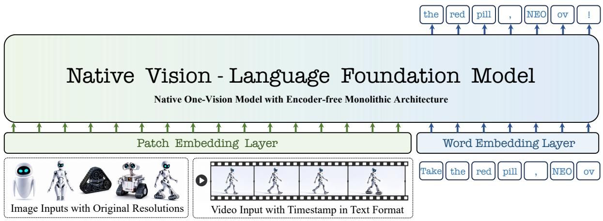
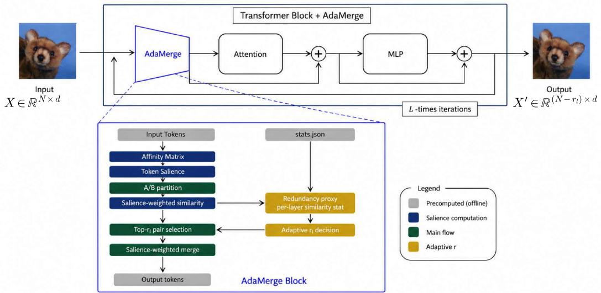

今日主线 · arXiv
From Pixels to Words --：原生 pixels-to-words one-vision 模型，直接挑战“预训练视觉 encoder + LLM adapter”的主流 VLM 拼接范式
原生 pixels-to-words one-vision 模型，直接挑战“预训练视觉 encoder + LLM adapter”的主流 VLM 拼接范式。

原生 pixels-to-words one-vision 模型，直接挑战“预训练视觉 encoder + LLM adapter”的主流 VLM 拼接范式。

高相关；详见方法、贡献和实验边界。
方法：原生 pixels-to-words one-vision 模型，直接挑战“预训练视觉 encoder + LLM adapter”的主流 VLM 拼接范式
 P0
P0
高相关；详见方法、贡献和实验边界。
方法：用 frozen-feature probing 比较 VLM 与 VGM 表征，直接回答语义与几何信息分别从哪类预训练来
 P0
P0
高相关；详见方法、贡献和实验边界。
方法：用 DINOv2/DINOv3/CLIP 表征条件化扩散模型合成训练数据，把通用视觉表征变成数据生成控制变量
 P1
P1
中高相关；详见方法、贡献和实验边界。
方法：DiffPrune 直接在 visual token representation 上学习可微信息节流，服务 VLM 计算预算

P1中高相关；详见方法、贡献和实验边界。
方法：训练-free ViT token merging，把 token 重要性和层级冗余纳入合并决策